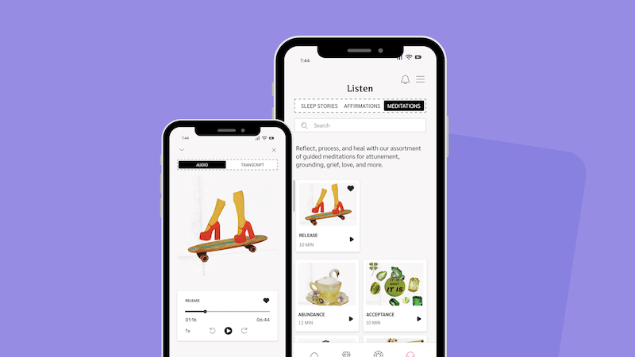

Chani

Project Overview
A feature addition to the Chani astrology app that lets users save and quickly resurface their favorite meditations, affirmations, and sleep stories.
Problem
The Chani app offers a rich library of meditations, affirmations, and sleep stories, but had no way to save or resurface audio files a user loved. Returning to a favorite meditation required manually searching through the entire Audio Library, making the experience feel more like a chore than a ritual.
👉 I stopped using the meditation feature because I had no way to save the meditations that resonated with me and easily find them again.
My Solution
I added two small but connected changes to the existing app. First, a heart icon on the Play Audio screen lets a user save any meditation while listening to it. Second, the Listen page was restructured using a tab pattern — Sleep Stories, Affirmations, Meditations — already familiar from the app's Home page.

How Chani Solved It
The Chani team restructured the Listen page with two new controls in the header: a filter icon for browsing by category (Meditations, Affirmations, Sleep Stories) and a heart icon that leads directly to a saved-only view. Below the header, the page now opens with a horizontally scrolling row of favorited audio — a new scroll pattern in the app — followed by three category cards. Tapping a card leads to the full list of audio files in that category, where each file displays a heart icon. Favorited files show a filled heart; all others show an outline heart, allowing users to save any file directly from the list without opening it.

Comparing Approaches
Both solutions address the same problem but prioritize different moments in the user journey.
Chani’s approach prioritizes saving. A heart icon appears on every audio tile, allowing users to bookmark content directly from the list without opening the file.
My approach prioritizes retrieval. Saved files surface automatically at the top of their category, making previously favorited content easy to locate later.
Process
Worked within an existing design system to identify and solve two connected user problems by extending a UI pattern already familiar to Chani users rather than introducing a new one.
👇 Click to jump to the corresponding section
Research Phase
User Research
As a Chani user myself, I had direct experience with the problem. Rather than building a persona, I used a user journey, empathy map, and user flow to pressure-test my assumptions and stay open to solutions I hadn't considered yet.
User Journey
Mapping the user journey across four stages, from discovering a meditation to giving up searching for it, made the breaking point visible: the app loses the user not during the experience but after it.

Empathy Map
Mapping the return to a favorite meditation revealed a clear pattern. Users were not frustrated with the content but with the effort required to find it again. The listening experience works well, but returning becomes a journey of searching and scrolling instead of clarity and focus.

User Flow
Two paths, one connected experience. The first follows a user discovering and saving a meditation — finding it, pressing play, and tapping the heart if it resonates. The second captures the return visit — tapping Listen, selecting the Meditations tab, and finding the saved file waiting at the top.

Design Phase
Wireframes & Prototypes
With a clear problem and an existing design system to work within, I moved directly to wireframes in Figma. Four screens capture the core of the solution: the Home page establishing the tab pattern I would carry into the Listen page, the Play screen before and after saving a file, and the redesigned Listen page showing category tabs with a favorited audio file surfaced at the top.

Results
Key Product Decisions
Decision 1: Solve for discoverability, not just saving
Adding bookmarking solved only half the problem. Users also needed an easy way to find saved audio again without scrolling through multiple lists.
I decided to extend the app’s existing tab pattern to the Listen page. Favorited items appear at the top of their category and are marked with a filled heart icon.
This keeps the interaction familiar, reduces scrolling, and makes saved content immediately visible without adding new UI elements.
Decision 2: Scope down to ship faster
During design I identified a larger opportunity to simplify navigation by combining the Me and Transits pages into a tabbed experience.
I decided to skip the change until a future release and focus this iteration on improving the Listen page.
Shipping the bookmarking feature first delivers immediate value, reduces the amount of change users must learn at once, and establishes the tab pattern as a familiar interaction before expanding it elsewhere.
Final Design
The prototype captures both flows: saving a meditation and returning to find it.
Product Successes
- Retrieval in 2 taps. From the Listen page, a saved meditation is reachable in two taps by selecting the Meditations tab and tapping the file at the top of the list. No scrolling and no scanning for a filled heart icon.
- Zero new interaction patterns introduced. The solution extended the tab pattern already present on the Home and Play screens rather than introducing a new UI convention. A user who knows the app already knows how to use the feature.
- Two problems solved with one design decision. The tab structure on the Listen page solved two distinct friction points - category navigation and the discoverability of favorites.
- Validated by the product team. The Chani team independently shipped a solution to the same problem, confirming the problem was real and worth prioritizing, not an edge case or personal preference.
What I Learned
Solving for the obvious problem often reveals a more important one underneath and the better solution usually addresses both.
What's Next
The tab pattern introduced on the Listen page opens an opportunity to simplify the app’s navigation.
The Me and Transits pages both rely on a user’s birth chart and could live under a single page with tabs: Your Birth Chart and Your Transits. This would reduce the main menu from five items to four and extend a pattern users are already learning.